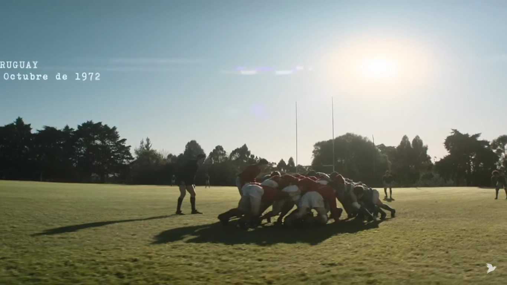
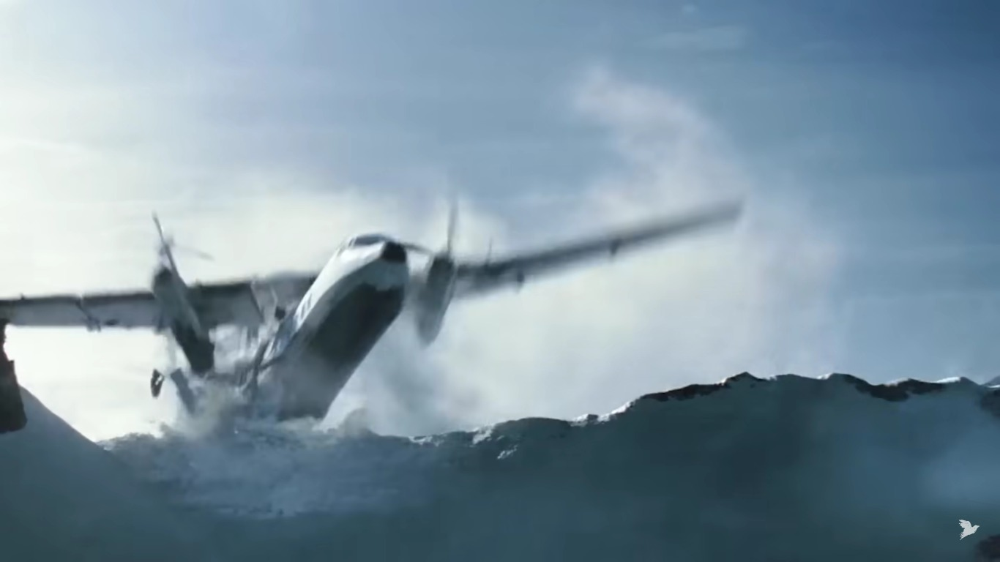
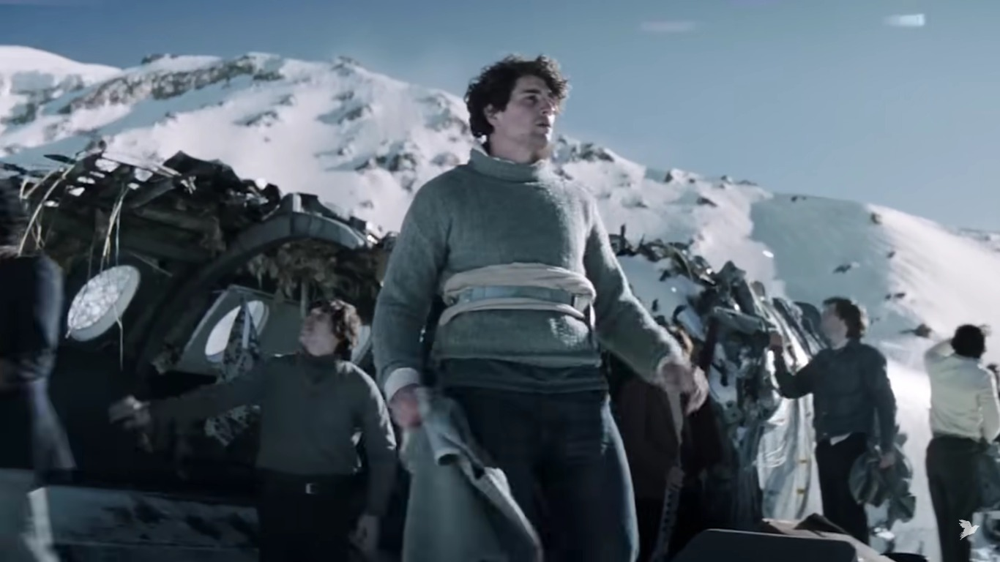
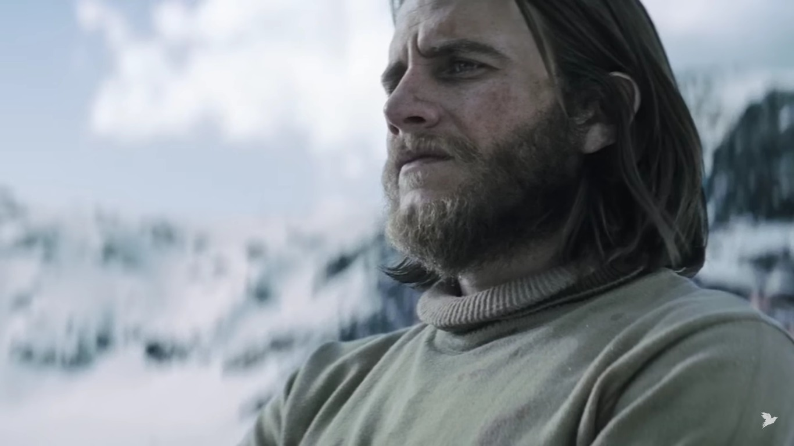
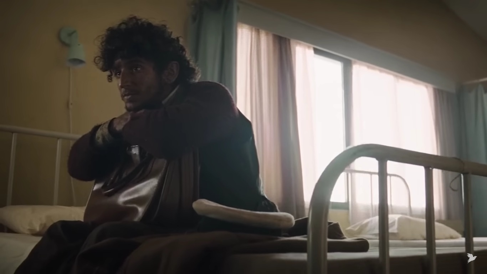

La introducción del relato establece el escenario inicial del viaje del equipo de rugby All Christians Club hacia Santiago de Chile. Describe el ambiente de anticipación y emoción entre los pasajeros antes del despegue, compartiendo sus expectativas y sueños para el viaje. Esta sección nos sumerge en el clima de camaradería y positivismo que precede a la tragedia que transformará sus vidas, proporcionando un contexto vital para entender las experiencias posteriores de los personajes.
En este punto inicial del relato, nos adentramos en el ambiente vibrante y lleno de expectativas que precede al viaje del equipo de rugby All Christians Club hacia Santiago de Chile. Nos sumergimos en la emoción palpable entre los miembros del equipo mientras se preparan para partir, compartiendo sus sueños y anticipando las aventuras que les aguardan. Es un momento de camaradería y optimismo antes de que el destino los lleve por un camino inesperado y lleno de desafíos. Esta sección establece el telón de fondo de la historia, invitándonos a sumergirnos en el viaje junto a los protagonistas
En esta parte central del relato, nos encontramos con los sobrevivientes del accidente mientras luchan por sobrevivir en el implacable entorno de la cordillera de los Andes. Se exploran los desafíos físicos y emocionales que enfrentan, así como las decisiones difíciles que deben tomar para garantizar su supervivencia. Es un período de prueba y tribulación, donde la fortaleza del espíritu humano se pone a prueba al límite, y donde cada acción tiene consecuencias de vida o muerte.
En el desenlace de la historia, presenciamos el rescate de los sobrevivientes y su regreso a la civilización después de semanas de lucha y sacrificio en la montaña. Se exploran las emociones encontradas que experimentan al enfrentarse a la realidad de lo que han vivido y perdido durante su odisea. Es un momento de alivio y celebración, pero también de reflexión y asimilación de las experiencias que han transformado sus vidas para siempre.
En esta última parte del relato, nos sumergimos en las reflexiones finales de los sobrevivientes mientras procesan el impacto duradero de su experiencia en la montaña. Se exploran los temas del propósito, el significado y la resiliencia mientras cada personaje busca encontrar su lugar en un mundo cambiado por la tragedia. Es un momento de cierre y conclusión, pero también de inicio de un nuevo capítulo en la vida de los protagonistas, marcado por la superación y la esperanza.
